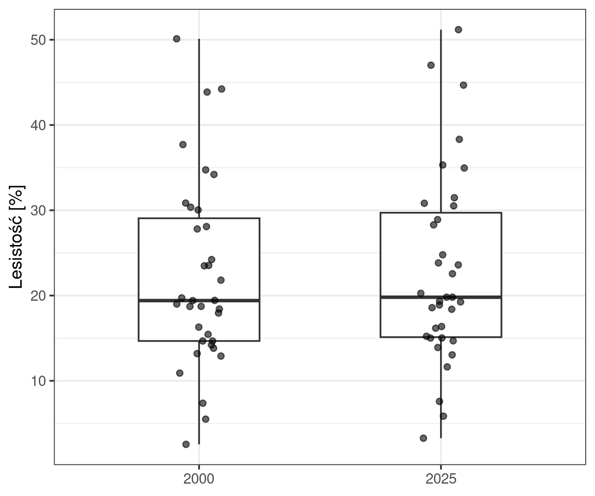
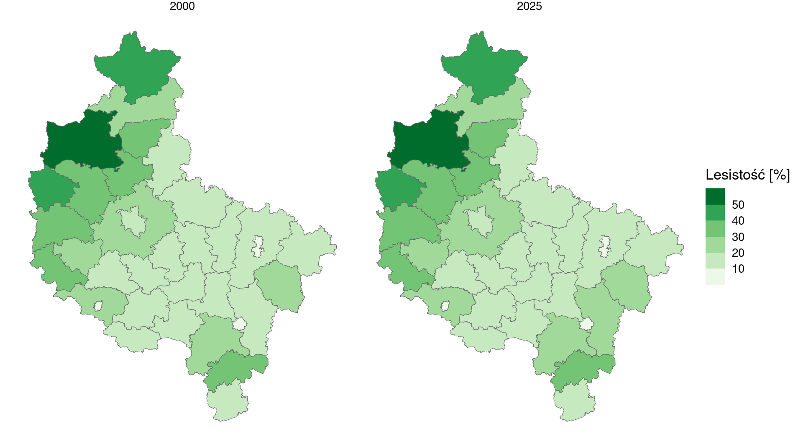
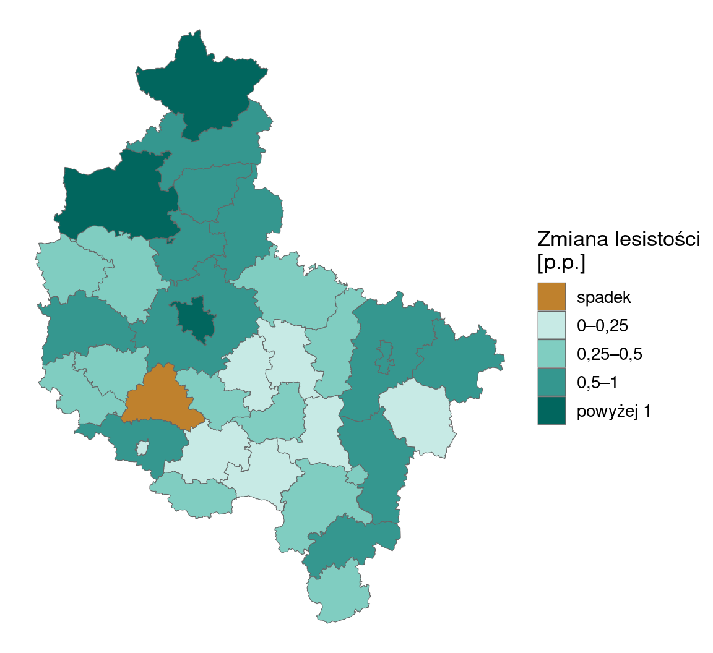
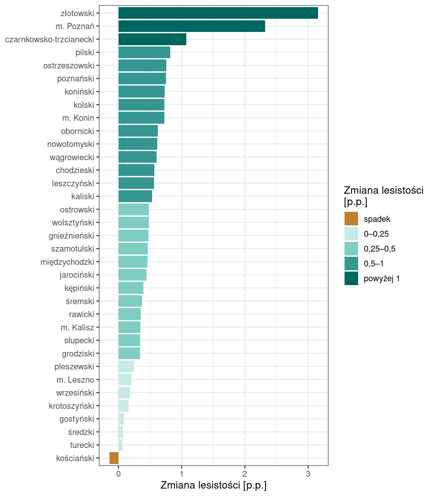
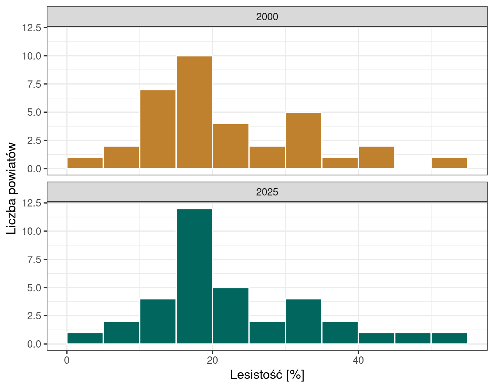
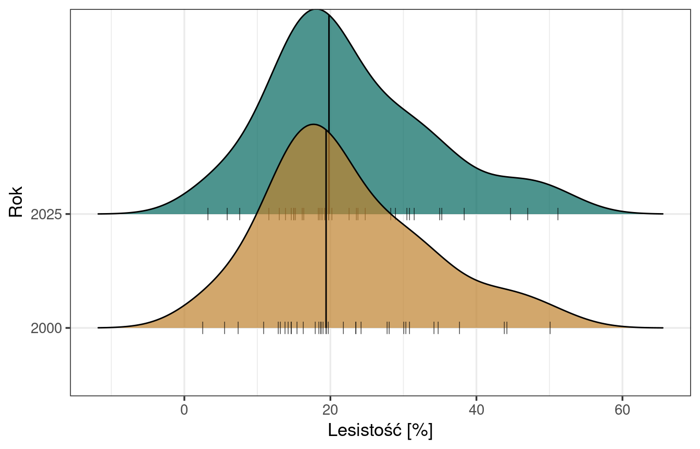
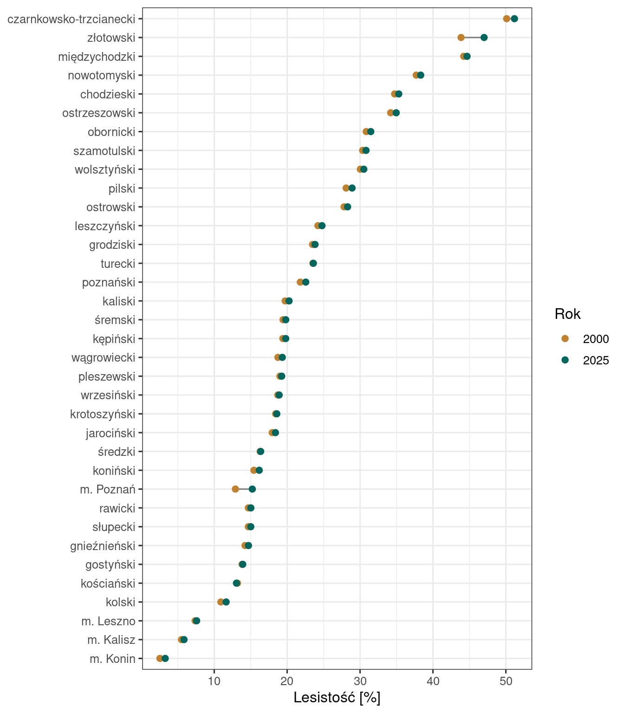
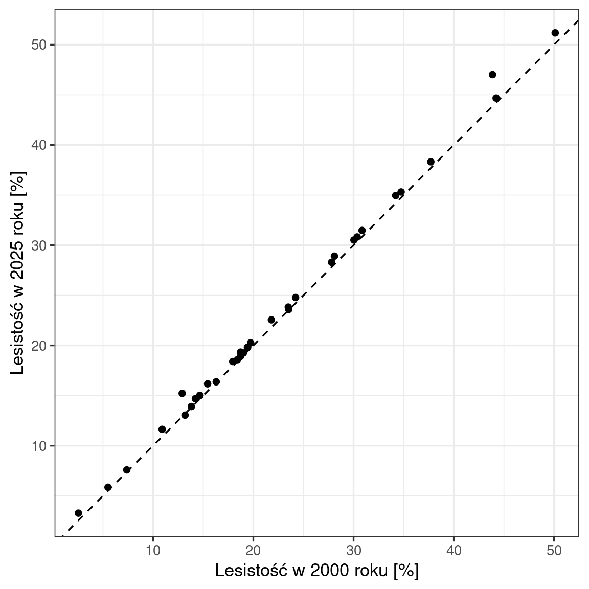

26Lesistość powiatów województwa wielkopolskiego w latach 2000 i 2025
Jak czytać ten rozdział
Rozdział ma postać raportu (Wprowadzenie – Wnioski), po którym następują dwie sekcje dydaktyczne: Wybór sposobu prezentacji wyników (Sekcja 26.6) przedstawia te same wyniki na innych typach wykresów, a Obliczenia w R (Sekcja 26.7) wyjaśniają kod wszystkich sekcji. Kod R jest w raporcie domyślnie ukryty — rozwija się go przyciskiem Kod nad wynikiem.
26.1 Wprowadzenie
Lesistość to udział powierzchni lasów w powierzchni jednostki terytorialnej, wyrażony w procentach:
Raport opisuje lesistość 35 powiatów województwa wielkopolskiego w latach 2000 i 2025 i odpowiada na pytania badawcze:
Jaka była lesistość powiatów w 2000 i 2025 roku i jak różniła się między powiatami? (Sekcja 26.4.1)
Jak zmieniła się lesistość powiatów w latach 2000–2025? (Sekcja 26.4.2)
Plik z danymi zawiera powierzchnię lasów, ale nie zawiera powierzchni powiatów. Raport łączy więc dane tabelaryczne z granicami powiatów, oblicza powierzchnię powiatów z ich granic, a wyniki przedstawia na kartogramie, mapie zmiany i wykresach.
26.2 Dane
Powierzchnia lasów. Plik lasy_bld.csv zawiera powierzchnię lasów w powiatach Polski w latach 2000 i 2025. Źródło danych: Bank Danych Lokalnych GUS (https://bdl.stat.gov.pl/), dziedzina „Leśnictwo i łowiectwo” → „Leśnictwo wszystkich form własności” → „Powierzchnia lasów”, zmienna „lasy ogółem” (identyfikator zmiennej 217916). Dane BDL są udostępniane na licencji Creative Commons Uznanie autorstwa 4.0 (CC BY 4.0). Jednostką obserwacji jest powiat; miasta na prawach powiatu są osobnymi jednostkami.
Kolumna
Znaczenie
Jednostka
Kod
kod jednostki terytorialnej powiatu (TERYT), 7 cyfr
—
Nazwa
nazwa powiatu
—
lasy2000
powierzchnia lasów w 2000 roku
ha
lasy2025
powierzchnia lasów w 2025 roku
ha
Plik ma trzy cechy, które wymagają ustawienia argumentów przy wczytaniu (Sekcja 26.7.1): kolumny są rozdzielone średnikiem, liczby zapisano z przecinkiem dziesiętnym, a kody powiatów z województw o numerach 02–08 zaczynają się od zera (np. 0201000). Plik liczy 381 wierszy. W 11 z nich brakuje wartości z jednego roku (9 braków dla 2000 roku, 2 dla 2025 roku). Wiersze te odpowiadają zmianom podziału na powiaty — np. miasto Wałbrzych opisują dwa wiersze: „Powiat m. Wałbrzych do 2002” i „Powiat m. Wałbrzych od 2013”. Wszystkie te wiersze dotyczą powiatów spoza województwa wielkopolskiego.
Granice powiatów. Granice pochodzą z bazy GADM w wersji 4.1 (https://gadm.org/); poziom 2 tej bazy to w Polsce powiaty. Funkcja gadm() z pakietu geodata przy pierwszym uruchomieniu kodu pobiera je z serwera (plik ok. 22 MB; wymaga połączenia z internetem) i zapisuje w folderze granice/ obok pliku .qmd; przy kolejnych uruchomieniach wczytuje zapisany plik. Dane GADM są dostępne bezpłatnie do zastosowań akademickich i niekomercyjnych; ich redystrybucja wymaga zgody, dlatego granice nie są dołączone do folderu dane/, a pobranego pliku nie należy udostępniać innym osobom. W raporcie wykorzystano kolumny:
Kolumna
Znaczenie
NAME_1
nazwa województwa
CC_2
kod powiatu (TERYT), 4 cyfry — początek kodu z kolumny Kod
geometry
granice powiatu
Kod
# pakiety: tidyverse (przetwarzanie danych i wykresy), sf (dane przestrzenne),# geodata (pobieranie granic jednostek administracyjnych)library(tidyverse)library(sf)library(geodata)# powierzchnia lasów w powiatach: kolumny rozdzielone średnikiem, przecinek dziesiętny,# kod TERYT wczytany jako tekst, aby zachować zero na początkulasy <-read.csv("dane/lasy_bld.csv", sep =";", dec =",", encoding ="UTF-8",colClasses =c(Kod ="character")) |>select(Kod, Nazwa, lasy2000, lasy2025)# granice powiatów Polski (GADM, poziom 2) zapisane w folderze granice/# (pobierane tylko przy pierwszym uruchomieniu) i zamienione na obiekt sfgranice_powiatow <-gadm(country ="POL", level =2, path ="granice/") |>st_as_sf()
Kod
# dołączenie danych o lasach do granic, wybór województwa i obliczenie lesistościpowiaty <- granice_powiatow |>mutate(Kod =paste0(CC_2, "000")) |># 7-cyfrowy kod, jak w kolumnie Kodleft_join(lasy, by ="Kod") |>filter(NAME_1 =="Wielkopolskie") |>st_transform(2180) |># układ współrzędnych PUWG 1992mutate(nazwa =str_remove(Nazwa, "Powiat "), # krótka nazwa do wykresówpow_ha =as.numeric(st_area(geometry)) /10000, # powierzchnia: m² → hales2000 = lasy2000 / pow_ha *100, # lesistość w 2000 roku [%]les2025 = lasy2025 / pow_ha *100, # lesistość w 2025 roku [%]zmiana = les2025 - les2000) # zmiana lesistości [p.p.]
Obiekt powiaty zawiera 35 powiatów województwa wielkopolskiego: 31 powiatów i 4 miasta na prawach powiatu (Kalisz, Konin, Leszno, Poznań). Kod każdego z nich znalazł swój odpowiednik w pliku lasy_bld.csv, a kolumny lasy2000 i lasy2025 nie zawierają braków danych. Kolumny obliczone w raporcie:
Kolumna
Znaczenie
Jednostka
nazwa
nazwa powiatu bez słowa „Powiat”
—
pow_ha
powierzchnia powiatu obliczona z granic
ha
les2000, les2025
lesistość w 2000 i 2025 roku
%
zmiana
zmiana lesistości: les2025 − les2000
punkty procentowe
26.3 Metody
Powierzchnię powiatu obliczono z jego granic po przekształceniu współrzędnych do układu PUWG 1992 (kod EPSG 2180) — układu współrzędnych płaskich prostokątnych obejmującego obszar Polski, ze współrzędnymi w metrach. Lesistość obliczono ze wzoru podanego we wprowadzeniu. Dla obu lat przyjęto te same granice (GADM 4.1). Powierzchnia obliczona z granic GADM może różnić się od powierzchni powiatów publikowanej przez GUS, dlatego lesistość obliczona w raporcie może różnić się od lesistości publikowanej w BDL.
Poziom i zróżnicowanie lesistości powiatów w każdym roku opisano miarami położenia (średnia, mediana, kwartyle) i zmienności (odchylenie standardowe, wartość najmniejsza i największa). Obok nich podano lesistość całego województwa, obliczoną jako suma powierzchni lasów podzielona przez sumę powierzchni powiatów. Ta wartość różni się od średniej lesistości powiatów: średnia przypisuje każdemu powiatowi tę samą wagę, niezależnie od jego powierzchni.
Zmianę lesistości wyrażono jako różnicę lesistości w 2025 i w 2000 roku. Różnica dwóch wartości wyrażonych w procentach jest wyrażona w punktach procentowych (p.p.): wzrost lesistości z 20% do 21% to wzrost o 1 p.p.
Na kartogramie lesistości wartości podzielono na klasy co 10%, z tymi samymi granicami klas dla obu lat, co pozwala porównać panele bezpośrednio. Na mapie zmiany lesistości granicą klas jest 0: spadek i wzrost lesistości mają różne barwy, a nasycenie barwy rośnie z wielkością zmiany (skala rozbieżna, Sekcja 18.5).
26.4 Wyniki
26.4.1 Lesistość powiatów w 2000 i 2025 roku
Kod
# tabela w postaci długiej: jeden wiersz = powiat w danym rokupowiaty_dlugie <- powiaty |>select(nazwa, les2000, les2025) |>pivot_longer(c(les2000, les2025), names_to ="rok", names_prefix ="les",values_to ="lesistosc")# lesistość województwa: suma powierzchni lasów / suma powierzchni powiatówlesistosc_woj <- powiaty |>st_drop_geometry() |>summarise(`2000`=sum(lasy2000) /sum(pow_ha) *100,`2025`=sum(lasy2025) /sum(pow_ha) *100) |>pivot_longer(everything(), names_to ="rok", values_to ="wojewodztwo")
Kod
# statystyki opisowe lesistości powiatów w każdym roku i lesistość województwapowiaty_dlugie |>st_drop_geometry() |>group_by(rok) |>summarise(n =n(),srednia =mean(lesistosc),mediana =median(lesistosc),odch_std =sd(lesistosc),min =min(lesistosc),q1 =quantile(lesistosc, 0.25),q3 =quantile(lesistosc, 0.75),max =max(lesistosc)) |>left_join(lesistosc_woj, by ="rok") |> knitr::kable(digits =1,col.names =c("Rok", "Liczba powiatów", "Średnia", "Mediana","Odchylenie standardowe", "Minimum", "Pierwszy kwartyl","Trzeci kwartyl", "Maksimum", "Województwo"),format.args =list(decimal.mark =","))
Tabela 26.1: Statystyki opisowe lesistości 35 powiatów województwa wielkopolskiego oraz lesistość województwa, 2000 i 2025 [%]
Rok
Liczba powiatów
Średnia
Mediana
Odchylenie standardowe
Minimum
Pierwszy kwartyl
Trzeci kwartyl
Maksimum
Województwo
2000
35
22,2
19,4
11,0
2,5
14,7
29,1
50,1
25,2
2025
35
22,8
19,8
11,3
3,3
15,1
29,7
51,2
25,9
Lesistość powiatów w obu latach mieściła się w szerokim przedziale (Tabela 26.1): od 2,5% w 2000 roku i 3,3% w 2025 roku w mieście Koninie do 50,1% i 51,2% w powiecie czarnkowsko-trzcianeckim. Połowa powiatów miała lesistość od 14,7% do 29,1% w 2000 roku i od 15,1% do 29,7% w 2025 roku. Średnia lesistość powiatów (22,2% i 22,8%) była wyższa od mediany (19,4% i 19,8%). Lesistość województwa (25,2% w 2000 roku i 25,9% w 2025 roku) była wyższa od średniej lesistości powiatów.
Kod
# wykres pudełkowy z punktami powiatów rozsuniętymi w poziomieggplot(powiaty_dlugie, aes(x = rok, y = lesistosc)) +geom_boxplot(outlier.shape =NA, width =0.5) +# punkty odstające rysuje geom_jittergeom_jitter(width =0.1, height =0, alpha =0.6) +labs(x =NULL, y ="Lesistość [%]") +theme_bw(base_size =13)

Rycina 26.1: Lesistość 35 powiatów województwa wielkopolskiego, 2000 i 2025; punkty — powiaty
Rozkłady lesistości w obu latach mają podobny kształt (Rycina 26.1). Pudełka obejmują wartości od około 15% do około 30%; powyżej trzeciego kwartyla wartości są rozproszone do około 50%, a poniżej pierwszego kwartyla — skupione między 2,5% a 15%. Ten układ jest zgodny z wyższą średnią niż mediana w Tabela 26.1 (asymetria prawostronna).
Kod
# kartogram w dwóch panelach według roku, wspólne klasy co 10%ggplot(powiaty_dlugie) +geom_sf(aes(fill = lesistosc), colour ="grey40", linewidth =0.2) +facet_wrap(~rok) +scale_fill_fermenter(breaks =seq(10, 50, by =10), # granice klas co 10%palette ="Greens", direction =1) +labs(fill ="Lesistość [%]") +theme_void(base_size =13)

Rycina 26.2: Kartogram lesistości powiatów województwa wielkopolskiego, 2000 i 2025
Rozmieszczenie lesistości w obu latach jest takie samo (Rycina 26.2). Lesistość powyżej 30% miało w obu latach 9 powiatów; osiem z nich leży w północnej i zachodniej części województwa, dziewiąty — powiat ostrzeszowski — na południu. Największą lesistość — powyżej 40% — miały powiaty czarnkowsko-trzcianecki, złotowski i międzychodzki. Lesistość poniżej 10% miały trzy miasta na prawach powiatu: Konin, Kalisz i Leszno. W 2025 roku tylko jeden powiat — kaliski — znalazł się w innej klasie niż w 2000 roku (wzrost z 19,7% do 20,3%).
26.4.2 Zmiana lesistości w latach 2000–2025
Kod
# klasy zmiany lesistości z granicą w 0 i kolory: brązowy — spadek, zielone — wzrostpowiaty <- powiaty |>mutate(klasa_zmiany =cut(zmiana,breaks =c(-Inf, 0, 0.25, 0.5, 1, Inf),labels =c("spadek", "0–0,25", "0,25–0,5", "0,5–1", "powyżej 1")))kolory_zmiany <-c("spadek"="#BF812D", "0–0,25"="#C7EAE5", "0,25–0,5"="#80CDC1","0,5–1"="#35978F", "powyżej 1"="#01665E")
Kod
# mapa zmiany lesistości: kolor według klasy zmianyggplot(powiaty) +geom_sf(aes(fill = klasa_zmiany), colour ="grey40", linewidth =0.2) +scale_fill_manual(values = kolory_zmiany) +labs(fill ="Zmiana lesistości\n[p.p.]") +theme_void(base_size =13)

Rycina 26.3: Zmiana lesistości powiatów województwa wielkopolskiego w latach 2000–2025 [p.p.]
Kod
# wykres słupkowy: powiaty uporządkowane według zmiany lesistościggplot(powiaty, aes(x = zmiana, y =fct_reorder(nazwa, zmiana), fill = klasa_zmiany)) +geom_col() +scale_fill_manual(values = kolory_zmiany) +labs(x ="Zmiana lesistości [p.p.]", y =NULL, fill ="Zmiana lesistości\n[p.p.]") +theme_bw(base_size =12)

Rycina 26.4: Zmiana lesistości powiatów województwa wielkopolskiego w latach 2000–2025 [p.p.]; kolory klas jak na rycinie 26.3
W latach 2000–2025 lesistość wzrosła w 34 z 35 powiatów (Rycina 26.3, Rycina 26.4). W większości powiatów wzrost był niewielki: mediana zmiany wynosiła 0,47 p.p., a w 24 powiatach zmiana mieściła się w przedziale 0,25–1 p.p. Wzrost powyżej 1 p.p. dotyczył trzech powiatów: złotowskiego (3,16 p.p.), miasta Poznania (2,32 p.p.) i czarnkowsko-trzcianeckiego (1,07 p.p.). Spadek lesistości wystąpił w jednym powiecie — kościańskim (−0,14 p.p.). Lesistość województwa wzrosła o 0,68 p.p., a łączna powierzchnia lasów — z 750 241 ha do 770 430 ha.
26.5 Wnioski
Lesistość powiatów województwa wielkopolskiego była silnie zróżnicowana: w 2025 roku od 3,3% (miasto Konin) do 51,2% (powiat czarnkowsko-trzcianecki), przy medianie 19,8%. Najbardziej lesiste powiaty leżą w północnej i zachodniej części województwa, najmniej lesiste są miasta na prawach powiatu (Sekcja 26.4.1).
W latach 2000–2025 lesistość wzrosła w 34 z 35 powiatów, w większości o mniej niż 1 p.p. (mediana 0,47 p.p.). Największy wzrost wystąpił w powiecie złotowskim (3,16 p.p.), spadek — tylko w powiecie kościańskim (−0,14 p.p.). Lesistość województwa wzrosła z 25,2% do 25,9% (Sekcja 26.4.2).
26.6 Wybór sposobu prezentacji wyników
Sekcja przedstawia te same dane w innych formach niż w wynikach i porównuje, co pokazuje każda z nich: najpierw rozkład lesistości powiatów w obu latach, potem zmianę lesistości.
26.6.1 Rozkład lesistości
Rozkład lesistości przedstawiono w wynikach na wykresie pudełkowym z punktami powiatów (Rycina 26.1). Poniżej ten sam rozkład przedstawiono na histogramach w dwóch panelach i na wykresie grzbietowym.
Histogramy w dwóch panelach (Rycina 26.5) przedstawiają liczbę powiatów w klasach lesistości o szerokości 5 punktów procentowych. Panele ustawiono jeden pod drugim, ze wspólną osią x, co pozwala porównać położenie słupków w obu latach.
Kod
# histogram w osobnym panelu dla każdego roku, panele jeden pod drugimggplot(powiaty_dlugie, aes(x = lesistosc, fill = rok)) +geom_histogram(binwidth =5, boundary =0, colour ="white") +# klasy co 5%, od 0facet_wrap(~rok, ncol =1) +scale_fill_manual(values =c("2000"="#BF812D", "2025"="#01665E")) +labs(x ="Lesistość [%]", y ="Liczba powiatów") +theme_bw(base_size =13) +theme(legend.position ="none") # rok podany w nagłówku panelu

Rycina 26.5: Lesistość 35 powiatów województwa wielkopolskiego, 2000 i 2025 — histogramy, klasy co 5%
Histogramy pokazują kształt rozkładu, którego nie przedstawia wykres pudełkowy: w obu latach najliczniejsza jest klasa 15–20% (10 powiatów w 2000 roku, 12 w 2025 roku), a druga, mniejsza grupa powiatów ma lesistość 30–35% (5 i 4 powiaty). Różnice między panelami wynikają z przejścia powiatów między klasami. Klasę zmieniło sześć powiatów: rawicki (14,7% → 15,0%), słupecki (14,7% → 15,0%) i miasto Poznań (12,9% → 15,2%) przeszły z klasy 10–15% do klasy 15–20%, kaliski (19,7% → 20,3%) — do klasy 20–25%, chodzieski (34,7% → 35,3%) — do klasy 35–40%, a złotowski (43,9% → 47,0%) — do klasy 45–50%. Wzrost o około 0,35 p.p. zmienił więc liczność klas tak samo jak wzrost o 2,32 p.p. Liczność klas histogramu zależy od położenia granic klas, dlatego porównanie histogramów pokazuje zmianę rozkładu tylko wtedy, gdy zmiana wartości jest duża w stosunku do szerokości klasy.
Wykres grzbietowy (Rycina 26.6) przedstawia rozkład w każdym roku jako krzywą gęstości — funkcję ciągłą, bez podziału na klasy. Krzywe obu lat umieszczono jedna nad drugą na wspólnej osi x; pionowa linia oznacza medianę, a kreski pod krzywą — lesistość poszczególnych powiatów.
Kod
# pakiet z wykresem grzbietowymlibrary(ggridges)# krzywa gęstości dla każdego roku, mediana i powiaty pod krzywąggplot(powiaty_dlugie, aes(x = lesistosc, y = rok, fill = rok)) +geom_density_ridges(alpha =0.7, # przezroczystość wypełnieniaquantile_lines =TRUE, quantiles =2, # linia medianyjittered_points =TRUE, # obserwacje pod krzywąposition =position_points_jitter(height =0), # punkty bez przesunięciapoint_shape ="|", point_size =3# punkty w kształcie kreski ) +scale_fill_manual(values =c("2000"="#BF812D", "2025"="#01665E")) +labs(x ="Lesistość [%]", y ="Rok") +theme_bw(base_size =13) +theme(legend.position ="none")

Rycina 26.6: Lesistość 35 powiatów województwa wielkopolskiego, 2000 i 2025 — wykres grzbietowy; linia pionowa: mediana, kreski: powiaty
Krzywe gęstości obu lat mają niemal ten sam kształt: maksimum przy lesistości około 18%, dłuższy ogon po stronie wysokich wartości (asymetria prawostronna) i medianę bliską 20%. Grupa powiatów o lesistości 30–35%, widoczna na histogramach jako osobny słupek, na krzywej gęstości tworzy jedynie załamanie krzywej. Krzywa gęstości jest określona także poza zakresem danych — sięga wartości poniżej 0% i powyżej 60%, których lesistość nie może przyjmować. Jest to skutek wygładzenia: krzywa gęstości powstaje przez zsumowanie funkcji jądrowych umieszczonych w położeniu każdej obserwacji; odchylenie standardowe funkcji jądrowej jest równe szerokości pasma (tu dobranej automatycznie: 4,78 p.p.), dlatego krzywa sięga poza najmniejszą i największą wartość.
Wszystkie trzy formy — wykres pudełkowy, histogramy i wykres grzbietowy — prowadzą do tego samego wniosku: rozkład lesistości powiatów w 2025 roku niemal nie różni się od rozkładu w 2000 roku. Wykres pudełkowy przedstawia miary położenia i zakres w najbardziej zwartej formie; histogram pokazuje liczbę powiatów w klasach i grupy wartości, ale jego wygląd zależy od granic klas; wykres grzbietowy pokazuje kształt rozkładu bez podziału na klasy, ale wygładza nieliczne grupy wartości i wykracza poza zakres możliwych wartości. Żadna z tych form nie pokazuje, jak zmieniła się lesistość poszczególnych powiatów.
26.6.2 Zmiana lesistości
Zmianę lesistości przedstawiono w wynikach za pomocą zmiennej zmiana: na mapie (Rycina 26.3) i na wykresie słupkowym (Rycina 26.4). Te same dane można przedstawić bez obliczania różnicy — zestawiając lesistość z obu lat na jednym wykresie. Poniżej pokazano dwie takie formy: wykres hantlowy i wykres rozrzutu.
Wykres hantlowy (Rycina 26.7) przedstawia dla każdego powiatu dwa punkty — lesistość w 2000 i w 2025 roku — połączone odcinkiem. Długość odcinka jest równa zmianie lesistości.
Kod
# kolejność powiatów na osi y: według lesistości w 2025 rokukolejnosc <- powiaty |>arrange(les2025) |>pull(nazwa)# odcinek od lesistości w 2000 do lesistości w 2025 roku i punkty dla obu latggplot() +geom_segment(data = powiaty,aes(x = les2000, xend = les2025, y = nazwa, yend = nazwa),colour ="grey50") +geom_point(data = powiaty_dlugie,aes(x = lesistosc, y = nazwa, colour = rok),size =2) +scale_y_discrete(limits = kolejnosc) +scale_colour_manual(values =c("2000"="#BF812D", "2025"="#01665E")) +labs(x ="Lesistość [%]", y =NULL, colour ="Rok") +theme_bw(base_size =12)

Rycina 26.7: Lesistość powiatów województwa wielkopolskiego w 2000 i 2025 roku — wykres hantlowy
Wykres rozrzutu (Rycina 26.8) przedstawia lesistość w 2025 roku względem lesistości w 2000 roku. Linia przerywana to linia y = x: punkt powyżej niej oznacza wzrost lesistości, punkt poniżej — spadek, a odległość od linii w pionie jest równa zmianie lesistości.
Kod
# wykres rozrzutu z linią y = x i jednakową skalą obu osiggplot(powiaty, aes(x = les2000, y = les2025)) +geom_abline(slope =1, intercept =0, linetype ="dashed") +geom_point() +coord_equal() +labs(x ="Lesistość w 2000 roku [%]", y ="Lesistość w 2025 roku [%]") +theme_bw(base_size =13)

Rycina 26.8: Lesistość powiatów województwa wielkopolskiego w 2025 roku względem lesistości w 2000 roku; linia przerywana: y = x
Na obu wykresach widoczny jest przede wszystkim poziom lesistości i kolejność powiatów. Zmiana lesistości, wynosząca w większości powiatów mniej niż 1 p.p., zajmuje na osi o zakresie 0–50% odcinek krótszy od średnicy punktu: na wykresie hantlowym punkty z obu lat częściowo się nakładają, a na wykresie rozrzutu punkty leżą na linii y = x. Wyraźnie widoczne są tylko dwa największe wzrosty — w powiecie złotowskim i w mieście Poznaniu. Spadku lesistości w powiecie kościańskim (−0,14 p.p.) nie można odczytać z żadnego z tych wykresów.
Wykres hantlowy i wykres rozrzutu są właściwe, gdy zmiana jest duża w stosunku do zakresu wartości. Gdy zmiana jest mała w stosunku do poziomu — jak w tym raporcie — zmianę trzeba obliczyć jako osobną zmienną i przedstawić na osobnej rycinie, ze skalą dobraną do zakresu zmiany (Rycina 26.3, Rycina 26.4).
26.7 Obliczenia w R
Sekcja wyjaśnia kod w kolejności jego użycia w raporcie. Elementy omówione we wcześniejszych rozdziałach są opisane krótko, z odesłaniem.
26.7.1 Wczytanie danych
read.csv() wczytuje plik z argumentami dopasowanymi do jego zapisu:
dec = "," — przecinek dziesiętny (domyślnie kropka); bez tego argumentu kolumny lasy2000 i lasy2025 zostałyby wczytane jako tekst;
encoding = "UTF-8" — kodowanie znaków pliku, potrzebne do poprawnego odczytu polskich liter w nazwach powiatów;
colClasses = c(Kod = "character") — kolumna Kod wczytana jako tekst. Wczytana jako liczba utraciłaby zero na początku (0201000 → 201000) i nie dałaby się połączyć z kodem z granic powiatów.
Każdy wiersz pliku kończy się średnikiem, dlatego read.csv() tworzy dodatkową, pustą kolumnę X. select() pozostawia tylko cztery potrzebne kolumny.
26.7.2 Granice powiatów
gadm() pobiera granice jednostek administracyjnych z bazy GADM: country = "POL" — kod kraju (ISO 3166 alfa-3), level = 2 — poziom podziału administracyjnego (w Polsce: 0 — państwo, 1 — województwa, 2 — powiaty), path — folder, w którym zapisywany jest pobrany plik (ścieżka względna, jak przy read.csv()). gadm() tworzy w nim podfolder gadm/ i zapisuje plik gadm41_POL_2_pk.rds. Jeżeli plik już tam jest, gadm() wczytuje go bez ponownego pobierania — dlatego tylko pierwsze uruchomienie kodu trwa dłużej i wymaga połączenia z internetem. Usunięcie folderu granice/ powoduje ponowne pobranie pliku.
gadm() zwraca obiekt klasy SpatVector z pakietu terra. st_as_sf() zamienia go na obiekt sf — tabelę, w której kolumna geometry zawiera granice (Sekcja 6.5), co pozwala przetwarzać go funkcjami dplyr i rysować geom_sf() (Sekcja 5.2).
26.7.3 Łączenie danych z granicami i obliczenie lesistości
Kod powiatu w granicach (CC_2, np. 3001) ma 4 cyfry, a w pliku z danymi (Kod, np. 3001000) — 7 cyfr. paste0(CC_2, "000") dopisuje na końcu trzy zera i tworzy kolumnę Kod w tej samej postaci co w pliku lasy_bld.csv.
left_join() dołącza kolumny tabeli lasy do granic według wspólnej kolumny Kod (Sekcja 3.10). Obiekt z granicami jest pierwszym argumentem, dlatego wynik pozostaje obiektem sf. Przy odwrotnej kolejności (left_join(lasy, granice_powiatow)) wynik jest zwykłą ramką danych, a geom_sf() wymaga wtedy wskazania kolumny geometrii w mapowaniu: aes(geometry = geometry).
filter(NAME_1 == "Wielkopolskie") wybiera powiaty jednego województwa.
st_transform(2180) przelicza współrzędne granic z układu geograficznego WGS 84 (stopnie) do układu PUWG 1992 o kodzie EPSG 2180 (metry).
st_area() oblicza powierzchnię każdego obiektu w układzie współrzędnych obiektu; w układzie PUWG 1992 — na płaszczyźnie, w metrach kwadratowych. Wynik ma przypisaną jednostkę ([m^2]); as.numeric() usuwa ją, a dzielenie przez 10 000 zamienia m² na hektary (1 ha = 10 000 m²) (Sekcja 5.6).
str_remove(Nazwa, "Powiat ") usuwa z nazwy słowo „Powiat ” i skraca opisy osi na wykresach.
26.7.4 Statystyki i kartogram lesistości
pivot_longer() (Sekcja 3.9) zamienia kolumny les2000 i les2025 na dwie kolumny: rok i lesistosc. names_prefix = "les" usuwa z nazw kolumn przedrostek, dlatego kolumna rok zawiera wartości "2000" i "2025". Wynik pozostaje obiektem sf — każdy powiat występuje w nim dwa razy, z tą samą geometrią.
st_drop_geometry() usuwa kolumnę z geometrią przed obliczeniem statystyk. Funkcja summarise() zastosowana do obiektu sf łączy także geometrie obiektów w grupie; statystyki opisowe tego nie wymagają.
W tabeli lesistości województwa nazwy kolumn `2000` i `2025` zapisano w odwrotnych apostrofach, ponieważ nazwa kolumny zaczynająca się od cyfry wymaga takiego zapisu. pivot_longer(everything(), ...) zamienia je na kolumnę rok, według której left_join() łączy lesistość województwa ze statystykami powiatów.
Kartogram lesistości to jeden wykres podzielony na panele przez facet_wrap(~rok); panele mają wspólną skalę kolorów. scale_fill_fermenter() dzieli wartości na klasy o granicach breaks (Sekcja 18.5); palette = "Greens" i direction = 1 — paleta zieleni, od jasnej dla najmniejszych wartości do ciemnej dla największych.
26.7.5 Mapa i wykres zmiany lesistości
cut() dzieli wartości liczbowe na klasy: breaks to granice klas (-Inf i Inf oznaczają brak dolnej i górnej granicy), labels — nazwy klas. Wynikiem jest zmienna typu factor. Klasy wyznaczono przed narysowaniem mapy, ponieważ ten sam podział i te same kolory wykorzystuje także wykres słupkowy.
kolory_zmiany to wektor kolorów z nazwami klas (kolory z palety rozbieżnej Brewer „BrBG”: brązowy dla spadku, odcienie zieleni dla wzrostu). scale_fill_manual(values = kolory_zmiany) przypisuje każdej klasie jej kolor.
fct_reorder(nazwa, zmiana) porządkuje powiaty na osi według wartości zmiany.
26.7.6 Wybór sposobu prezentacji wyników
Histogramy w dwóch panelach to jeden wykres geom_histogram() podzielony przez facet_wrap(~rok, ncol = 1) — panele w jednej kolumnie, ze wspólną osią x. binwidth = 5 ustala szerokość klasy (5 p.p.), a boundary = 0 — położenie granic klas (0, 5, 10, …). theme(legend.position = "none") usuwa legendę, ponieważ rok podany jest w nagłówku panelu.
Wykres grzbietowy tworzy geom_density_ridges() z pakietu ggridges; argumenty są takie same jak w rozdziale o Europie (Sekcja 23.7). Szerokość pasma wygładzenia funkcja dobiera automatycznie i podaje w komunikacie Picking joint bandwidth of 4.78, ukrytym opcją #| message: false.
Wykres hantlowy łączy dwie warstwy z różnych tabel: geom_segment() rysuje odcinek od x do xend dla każdego powiatu z tabeli powiaty (jeden wiersz na powiat), a geom_point() — punkty z tabeli powiaty_dlugie (dwa wiersze na powiat), z kolorem według roku. Tabela jest podana w każdej warstwie argumentem data =, dlatego wywołanie ggplot() nie zawiera danych.
Kolejność powiatów na osi y wyznacza wektor kolejnosc: arrange(les2025) porządkuje powiaty według lesistości w 2025 roku, a pull(nazwa) zwraca kolumnę nazwa jako wektor. scale_y_discrete(limits = kolejnosc) ustawia tę kolejność na osi — wspólną dla obu warstw.
geom_abline(slope = 1, intercept = 0) rysuje linię y = x. coord_equal() nadaje jednostce na obu osiach tę samą długość (Sekcja 18.2).